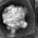

| .OPERATION: | RT SF M | ; Rotate, shift & mirror |
| .INPUT FILE NAME OR TEMPLATE: | sav_rib_avg | ; File name (input) |
| .OUTPUT FILE: | rtsfm | ; File name (output) |
| .ROTATION ANGLE, SCALE, MIRROR (IF < 0): | 161, 1, -1 | ; Rotation angle, scale & Mirror flag |
| .SHIFTS IN X & Y: | 5.87, -1.42 | ; X and Y shift |
| INPUT IMAGE | OUTPUT IMAGE |
|---|---|
 |  |
| sav_rib_avg | rtsfm |